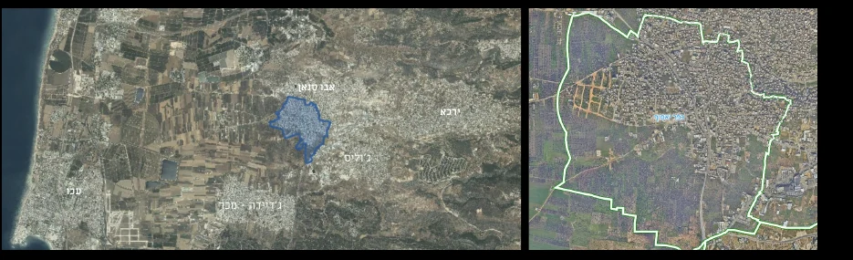
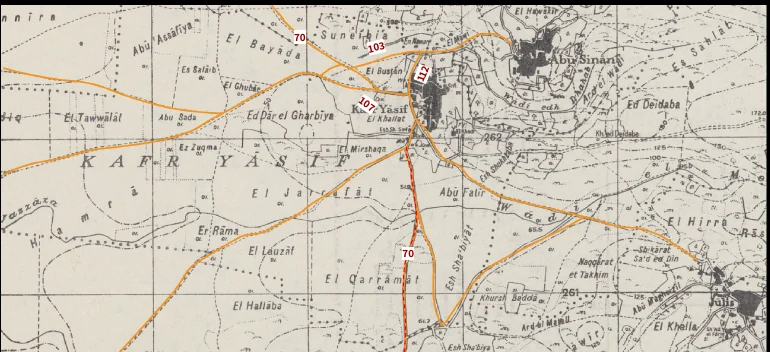
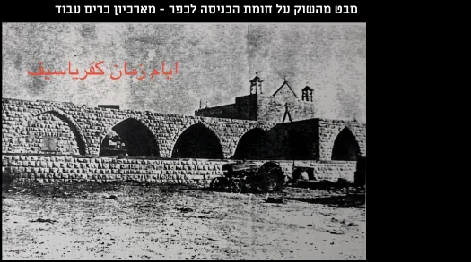
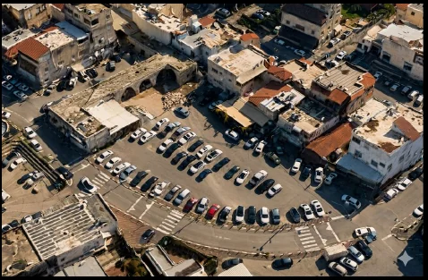
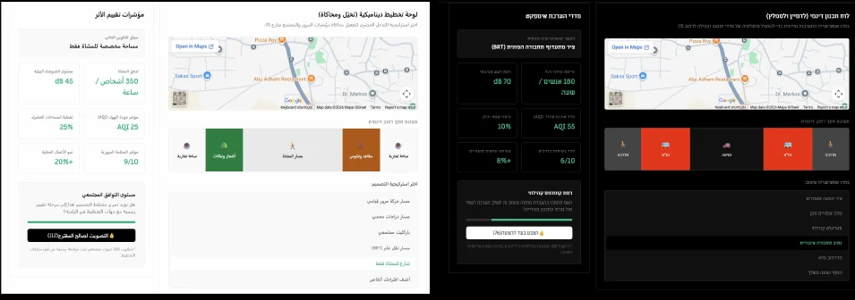

מטרה תיאורטית
לבחון את הקשר בין בעלות פרטית על קרקע, שיתוף ציבור ואדריכלות בקוד פתוח בהקשר של יישובים ערביים בישראל.
הצעת מחקר · בית ספר לאדריכלות
שיתוף ציבור דיגיטלי ואדריכלות בקוד פתוח בתכנון המרחב הציבורי בכפר יאסיף.
המחקר בוחן כיצד כלים דיגיטליים יכולים להפוך תושבים ממשתתפים פסיביים לשותפים פעילים בעיצוב הרחוב — מבלי להתעלם מהמורכבות של בעלות פרטית על קרקע, זיכרון מקומי וצרכים ציבוריים.
המתח המרכזי
המחשה רעיונית בלבד: המחקר שואל כיצד ניתן לגשר בין זכויות פרטיות לצרכים ציבוריים באמצעות תהליך שקוף ומשותף.
01 · מבוא
האם יכולים כלים דיגיטליים של אדריכלות בקוד פתוח ושיתוף ציבור לסייע בגישור בין אינטרסים פרטיים לבין צרכים ציבוריים בתכנון המרחב הציבורי בכפר יאסיף?
לבחון את הקשר בין בעלות פרטית על קרקע, שיתוף ציבור ואדריכלות בקוד פתוח בהקשר של יישובים ערביים בישראל.
לזהות חסמים והזדמנויות לשיתוף תושבים בתכנון המרחב הציבורי בכפר יאסיף.
לבחון כיצד כלים דיגיטליים יכולים לסייע לתושבים להבין, לדמיין ולהעריך חלופות תכנוניות.
לגבש עקרונות למערכת השתתפות דיגיטלית לקבלת החלטות משותפת בנושאי רחוב, הצללה, ניקוז, מסחר ומרחבים ציבוריים.
השערת המחקר
ההשערה היא שחלק מההתנגדויות לשינויים במרחב הציבורי נובע ממחסור במידע וביכולת להבין את השלכות ההתערבות. מערכת פתוחה שמאפשרת לבחון, לערוך ולהשוות חלופות עשויה להגביר אמון, לצמצם התנגדויות ולבנות שותפות.
02 · הבעיה
המחקר מציב יחד שלושה לחצים: מחסור בשטחים ציבוריים וירוקים, בעלות פרטית מפוצלת, ותהליכי תכנון שמתקשים לייצר השפעה ישירה לתושבים.
מקור נתוני חופות העצים והמחסור בשטח ציבורי: תוכנית ההיערכות לשינויי האקלים 2030. מקור שכבות הבעלות: GovMap.

03 · סקירת ספרות
המסגרת מחברת בין שיתוף ציבור, קניין ומרחב, אדריכלות בקוד פתוח וכלים דיגיטליים להשתתפות.
Digital Co-Design
בהשראת סולם ארנשטיין ותיאוריות של אזרחות דיגיטלית, היעד אינו רק ליידע או להתייעץ — אלא לאפשר לתושבים לקחת חלק בעיצוב חלופות ובהחלטות.
Spatial Justice
ביישובים ערביים, מבנה הקניין הפרטי מעצב את אפשרויות הפיתוח ואת היחס להתערבויות ציבוריות. המחקר בוחן כיצד תהליך משתף יכול לתווך את המתח הזה.
Open Source Urbanism
כמו בתוכנה: מודל משותף שניתן לצפות בו, לערוך אותו, להשוות גרסאות ולהשתמש בו מחדש. ה״בעלות״ עוברת מן האובייקט בלבד אל התהליך והידע המשותף.
PPGIS · Co-Creation
כלים דיגיטליים יכולים להציג את ההשלכות של החלטות תכנון בצורה נגישה: על מפה, בחתך רחוב, באמצעות קטלוג אלמנטים ובתרחישים חזותיים.
פלטפורמות שנבחנו
פלטפורמת קוד פתוח שמאפשרת לכל אדם להרכיב חתך רחוב באמצעות גרירה ושחרור של אלמנטים.
מוקד: עיצוב רחובתשתית קוד פתוח לתהליכי השתתפות מרובי שלבים, הצעות, דיונים, מפגשים ומעקב אחר יישום.
מוקד: תהליכים ארוכי טווחכלים להצעות אזרחיות, הצבעה, תקציב שיתופי וחקיקה שיתופית.
מוקד: קבלת החלטותשאלונים אינטראקטיביים מבוססי מפה וכלי PPGIS שמחברים בין חוויית תושב למיקום גיאוגרפי.
מוקד: ידע מקומי מרחבימקורות משלימים: ספרות ההשתתפות, מחקרי PPGIS והשתתפות דיגיטלית, מקורות הקוד הפתוח, ועמודי המוצר הרשמיים של הפלטפורמות שנבחנו.
04 · מתודולוגיה
המתודולוגיה משלבת קריאה של המרחב כפי שהוא היום עם שכבות היסטוריות, מסמכי תכנון, ראיונות ומקרי בוחן בינלאומיים.
מקורות: תוכנית המתאר הכוללנית, מפות, תצלומי אוויר וארכיונים, מקרי הבוחן הבינלאומיים, ומצגת המחקר הראשית.
שינוי רשת הדרכים
במיפוי ההיסטורי רחוב 103 מופיע כ־Track / Footpath, כחלק ממערכת דרכים שמקשרת בין הכפר, השדות והצירים האזוריים.



נתוני בינוי
מקור: תוכנית מתאר כוללנית 252-0411306 ומפקד האוכלוסין 2008, כפי שנותחו בעמודים 38–48 במצגת. האתר אינו מוסיף חישובים סטטוטוריים חדשים.
קולות מהשטח
סיפור משפחתי שהובא בראיון מתאר כיצד המרפסת המרוצפת הפכה שוב למרחב ירוק באמצעות צמחים ואלתור — דימוי קטן שמזקק את השאלה הרחבה של טבע בתוך מרקם בנוי וצפוף.
הראיון מתאר כיצד ציורי קיר, עיטורים ופסלים שולבו במרחבים שונים בכפר ומחזקים את הקשר בין תרבות מקומית לסביבה היומיומית.
בעל עסק מקומי מתאר שוק היסטורי שחולק למסחר בבעלי חיים ולתוצרת חקלאית; כיום, לאחר סלילת הרחבה באספלט, היא משמשת בעיקר לחניית רכבים.
בראיונות חצי־מובנים עולה התנגדות לוויתור על קרקע פרטית גם מול פיצוי, לצד זיכרון של מנגנוני שכנות וגמישות מרחבית שהתקיימו בעבר בצפיפות גבוהה.
מקור: סיכומי הראיונות במצגת הצעת המחקר, עמודים 50–53. הטקסט באתר הוא תקציר ואינו ציטוט מילולי.
05 · ארכיון חזותי
תיעוד הרחובות, שכבות היסטוריות, זיכרון מקומי, ראיונות, מקרי בוחן ואבות־טיפוס — כולם נלקחו ישירות מה־PDF של המחקר.
ייחוס התמונות והמפות: Google Maps, GovMap, ארכיון כרים עבוד ומג׳יד שחאדה; מקורות מקרי הבוחן מפורטים ברשימת המקורות.
06 · יישום
היישום המוצע מתרגם את העקרונות התיאורטיים למערכת מקומית: בניית חתך רחוב, ספריית אלמנטים פתוחה, מפת ידע מקומי והדמיות בזמן אמת.
שכבה 1 + 2
בחר אלמנטים והמערכת תעדכן חתך סכמטי ומדדי המחשה. המדדים כאן הם דמו אינטראקטיבי בלבד — לא חישוב הנדסי.
שכבה 2
שכבה 3
בחר סוג סימון ולחץ על המפה. כך ניתן להמחיש איך מאות נקודות של תושבים עשויות להצטבר לשכבת ידע מקומית.
שכבה 4
במקום להציג רק תכנית מקצועית מורכבת, תושב יוכל לצלם רחוב ולהבין באופן חזותי כיצד עצים, הצללה, ניקוז, שוק זמני וספסלים עשויים לשנות אותו — באמצעות AR או AI.

07 · תרומת המחקר
תכנון משתף, בעלות על קרקע, אדריכלות בקוד פתוח וכלים דיגיטליים — במסגרת מקרה בוחן של יישוב ערבי בישראל.
פיתוח הבנה של האופן שבו טכנולוגיות דיגיטליות עשויות לתווך בין זכויות פרטיות על קרקע לבין אינטרסים ציבוריים.
מערכת שמאפשרת לתושבים להשתתף בעיצוב הרחובות והמרחב הציבורי באמצעות כלים מובנים וברורים.
כיוון שניתן לבחון גם ביישובים נוספים שמתמודדים עם מחסור בקרקע, בעלות פרטית מפוצלת ומחסור בשטחים ציבוריים.
היעד הוא להעביר את הדיון מ־״מה מתכננים עבורנו?״ אל ״איך אנחנו מתכננים יחד?״
חזרה להתחלה08 · מקורות וייחוס
ההפניות מפרידות בין חומר המחקר המקומי, ספרות יסוד, פלטפורמות שנבחנו ומקרי הבוחן. קישורים חיצוניים מובילים למקור הרשמי כאשר הוא זמין.
גבריאל עבוד, בין קו המגרש לרחוב: שיתוף ציבור דיגיטלי ואדריכלות בקוד פתוח בתכנון המרחב, הצעת מחקר, בית ספר לאדריכלות, קורס 0881605001 — קולוקוויום ב׳; מרצה: ד״ר גל רינגל. הסיכומים, הנתונים המקומיים, המפות, הראיונות והדימויים באתר עובדו ממצגת בת 60 עמודים זו. שנת ההגשה אינה מצוינת במסמך.
עמודים 13–15 משתמשים ב־Wikipedia, GitHub, GNU, Linux ו־GNU General Public License כדוגמאות מושגיות לקוד פתוח, copyleft, ניהול גרסאות וידע משותף.
Streetmix, עמוד 16 · Decidim וקוד המקור, עמוד 17 · CONSUL DEMOCRACY, עמוד 18 · Maptionnaire, עמוד 19. התיאורים באתר הם תקצירים של מטרות ויכולות הפלטפורמות, לא המלצה מסחרית.